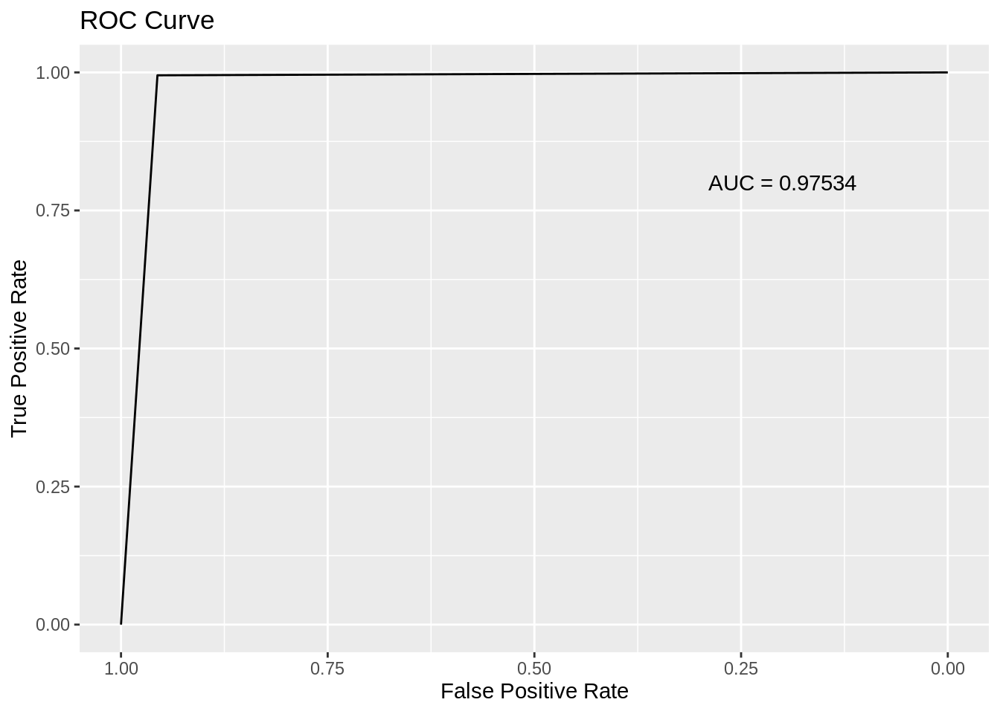

# load packages
library(tidymodels)
library(xgboost)
library(tidyverse)
library(pROC)
library(ggplot2)
library(corrplot)
library(gridExtra)
library(DMwR)
# read data
data <- read_csv("data/card_transdata.csv") XGBoost Vignette: Fraud Detection
Objectives
In this vignette, you will embark on an in-depth exploration, starting from the foundational theory of XGBoost to its practical application such as Exploratory Data Analysis(EDA) and XGBoost model training. This journey will lead you to effectively utilize XGBoost, which is a cutting-edge and industry-standard model. You’ll develop skills in:
Utilizing functions from the ggplot and corrplot packages for EDA and data visualization. These tools are essential for understanding the underlying patterns and relationships in your data.
Employing functions from the xgboost package to train an Extreme Gradient Boosting Model. This powerful machine learning technique is renowned for its efficiency and effectiveness in various predictive modeling tasks.
Leveraging functions from the pROC package to evaluate the performance of your model. This is crucial for assessing the effectiveness of your predictive model in real-world scenarios.
By the end of this vignette, you will have a solid understanding of how to effectively use these tools in a cohesive workflow to build and assess a robust machine learning model.
Prerequisites
First, please follow the action item below to get set up for the vignette. You may need to install one or more packages if the library() calls return an error.
Introduction
XGBoost, an acronym for eXtreme Gradient Boosting, was crafted by Dr. Tianqi Chen in 2016 as a gradient-boosting algorithm. Demonstrating remarkable success, it has emerged as a formidable player in various data science competitions. Renowned for its exceptional performance, XGBoost stands out as a robust solution for tasks such as handling structured data, text classification, regression, and notably, exhibiting superior capabilities on large-scale datasets. Our vignette presents a comprehensive exploration of XGBoost, including its mathematical principles, programming language support, and practical application in classification problems.
Principal and Theory
Prior to implementing the XGBoost model on the dataset, it is crucial to first understand the underlying mathematical principles of the Boosted Trees and XGBoost
Gradient Boosted Decision Tree (GBDT)
In GBDT, the prediction of observation i is the sum of the predicted values from each of the k trees in the ensemble.
\[\hat{y} = \sum_{i=1}^{k} f_k(x_i)\]Each tree in the boosting model fits the negative gradient of the loss function to the current model’s prediction, and the current model’s prediction is the sum of the first k-1 trees.
If we use mean squared error as the loss function in a regression task, each tree simply fits the residual.
For example, suppose a person is 30 years old, and a GBDT model is used to predict his age.
Given the dataset, suppose the first tree’s prediction is 20.
Then the second tree fits the residual, which is 30 - 20 = 10. Suppose the second tree outputs 7.
Then the third tree fits the residual 10 - 7 = 3. Suppose the third tree outputs 2.
By adding the prediction of the three trees, we get our final prediction.
XGBoost
XGBoost is an efficient and scalable implementation of the gradient-boosted decision tree.
- Tree Boosting
The objective function for k-th tree is \[\sum_{i=1}^{n} l(y_i, \hat{y_i}^{(k)})+\sum_{i=1}^{K}\omega(f_i)\]
The first term in the objective function denotes the loss function. It can be MSE in regression or cross-entropy in classification problems. The second term \(\omega(f_i)\) is a regularized term to control the model’s complexity to avoid overfitting.
When additively training the model, XGBoost used a second-order Taylor expansion to approximate the objective function instead of using the negative gradient.
After derivation, the optimization goal at step k will be \[\sum_{i=1}^{n}[g_if_k(x_i) + \frac{1}{2}h_{i}f_k^2(x_i)] + \omega(f_k)\]
where \(g_i\) and \(h_i\) denote the first-order and second-order derivative of the loss function to the current model’s prediction. i.e. \(g_i = \partial_{\hat{y_i}^{k-1}}l(y_i, \hat{y_i}^{k-1})\) and \(h_i = \partial^2_{\hat{y_i}{k-1}}l(y_i, \hat{y_i}^{k-1})\)
We find that the objective function for each tree depends only on \(g_i\) and \(h_i\), derivatives of the loss function. Therefore, XGBoost can be widely used in many scenarios, including regression, classification, and ranking problems, as long as XGBoost is given a loss function that is second-order differentiable. You can even customize your loss function in XGBoost[@He2021]
Approximate Split Finding
We first look at a basic greedy approach for finding best split point.

In the above Exact Greedy Algorithm, we need to traverse every possible value of every feature to find the best split point. The score measures the reduction of loss function before and after the split. However, the method is inefficient when dealing with large datasets.
Instead, XGBoost used an approximated approach to find split points efficiently.
In the approximate framework, we first select some candidate splitting points according to percentiles of the feature distribution based on some criteria. For instance, a sorted feature column contains 10 values [1,2,2,2,2,4,5,7,9,20]. A 0.6 quantile corresponds to 4.
Weighted Quantile Sketch
How do we find these candidate split points? We cannot assign equal weights to every observation of the feature, as larger values may have a more significant impact on the loss function. Therefore, we need to calculate a weight for each feature value to make candidates distribute evenly on the data.
For each observation, XGBoost used its second-order derivative \(h_i\) as weight. Formally, let multi-set \(D_k = {(x_{1k},h_1), (x_{2k}, h_2)<e2><80><a6>(x_{nk}, h_{n})}\) denote k-th feature value and its corresponding second-order gradient, the rank function is \[r_k(z) = \frac{1}{\sum_{(x,h) \in D_k}h}\sum_{(x,h) \in D_k, x < z}h\].
For example, given
| feature value | 1 | 4 | 6 | 10 | 12 | 20 | 30 | 44 | 59 |
|---|---|---|---|---|---|---|---|---|---|
| \[h_i\] | 0.1 | 0.1 | 0.1 | 0.1 | 0.1 | 0.1 | 0.4 | 0.2 | 0.6 |
30 corresponds to \(\frac{1}{3}\) percentile, and 59 corresponds to \(\frac{2}{3}\) percentile.
Other techniques in XGBoost to improve efficiency
Each column (feature) of the dataset is pre-sorted and stored in memory as a column block. Each block contains the sorted feature column and each observation’s corresponding label value. Recall that when finding the best split point in a decision tree, samples with the feature value less than the split value go to the left subtree, and samples with the feature value larger than the split point go to the right subtree. Instead of sorting in every split in every tree, this pre-sorting step is done only once. Then the efficiently sorted columns will be reused many times in building every single tree.
XGBoost supports parallel computing during the process of finding the best split point in building a single tree. Then the information gain calculation for each feature can be done in parallel. Moreover, You can tune the parameter nthread to control the number of cores used in training the XGBoost model.
XGBoost supports column subsampling similar to a random forest.
Application in R: Credit Card Fraud Detection
Having grasped the mathematical concepts behind it, we can now proceed to the most exhilarating segment: applying this model in R
Dataset Introduction
This vignette is conducted on a simulated “Credit Card Fraud” dataset obtained on Kaggle[@ULB2018]. This dataset presents a binary classification problem, classifying transactions as either fraudulent or legitimate. With 8 variables and a total of 1,000,000 observations, only 8.74% (87,403) are marked as fraudulent, highlighting a significant class imbalance.
| distance_from_home | distance_from_last_transaction | ratio_to_median_purchase_price | repeat_retailer | used_chip | used_pin_number | online_order | fraud |
|---|---|---|---|---|---|---|---|
| 57.877857 | 0.3111400 | 1.9459400 | 1 | 1 | 0 | 0 | 0 |
| 10.829943 | 0.1755915 | 1.2942188 | 1 | 0 | 0 | 0 | 0 |
| 5.091080 | 0.8051526 | 0.4277146 | 1 | 0 | 0 | 1 | 0 |
| 2.247564 | 5.6000435 | 0.3626626 | 1 | 1 | 0 | 1 | 0 |
| 44.190936 | 0.5664863 | 2.2227673 | 1 | 1 | 0 | 1 | 0 |
| 5.586408 | 13.2610733 | 0.0647685 | 1 | 0 | 0 | 0 | 0 |
The variable explanations are as follows:
| Variable Name | Feature Explanation | Type |
|---|---|---|
| distance_from_home | The distance from home where the transaction happened | Continuous |
| distance_from_last_transaction | The distance from last transaction happened | Continuous |
| ratio_to_median_purchase_price | Ratio of purchased price transaction to median purchase price | Continuous |
| repeat_retailer | Is the transaction happened from same retailer | Discrete |
| used_chip | Is the transaction through credit card chip | Discrete |
| used_pin_number | Is the transaction happened by using PIN number | Discrete |
| online_order | Is the transaction an online order | Discrete |
| fraud | Is the transaction fraudulent | Discrete |
Exploratory Data Analysis
Building on the introduction, we’ve established a basic understanding of the dataset, including the meaning of each variable. But before progressing to model training, it’s important to deepen our familiarity with the data through comprehensive Exploratory Data Analysis.
First, we want to check if there is missing values in the dataset
# check missing values
data %>% is.na() %>% sum()[1] 0Through the code above, we know that this dataset contains no missing value, therefore there is no imputation needed. Then, we can use the following chunk to check the distribution of the variables.
# plot variable distribution
par(mfrow = c(3, 3))
for (col in colnames(data)) {
density_values <- density(data[[col]])
plot(density_values, main = col, col = "skyblue", lwd = 2)
}
We can observe from the density curve graph of each variable that except for the first three, the other 5 variables including our response variable ‘fraud’ are binary. But the first three variables are greatly skewed. After that, we want to see if correlation exists between the variables.
# correlation plot
par(mfrow = c(1, 1))
# Correlation
data %>%
cor(use = 'everything') %>%
corrplot(type = 'lower')From the correlation plot, the numerical variable ‘ratio_to_median’ has a positive correlation with respect to ‘fraud’, and then are ‘distance_from_home’ and ‘online_order’. Other than that, ‘used_pin_number’ has negatively correlated with ‘fraud’. Lastly, we want to specifically analyze the distribution of the response variable, which is our most interested variable.
# response distribution
plot.fraud <- ggplot(data, aes(x = ifelse(data$fraud == 0, 'Safe', 'Fraud'))) +
geom_bar(fill = c('cyan','cornflowerblue')) +
labs(title="Distribution of Fraud in the Dataset", x="Fraud Class", y="Count") +
theme(plot.title = element_text(hjust = 0.5)) +
geom_text(aes(label = after_stat(count)), stat = "count", vjust = 1.5, colour = "white")
table.fraud <- table(ifelse(data$fraud == 0, 'Safe', 'Fraud')) %>%
rbind(c('8.74%','91.26%')) %>%
as.data.frame() %>% tableGrob()
grid.arrange(arrangeGrob(plot.fraud, table.fraud, ncol=2))
This graph represents the distribution of ‘fraud’. Around 91% of the transactions are not fraud and 9% are fraud, which reflects a imbalance in the data. This imbalance suggests adapting performance metrics like AUC-ROC, f1 score as evaluation metrics instead of “accurary” to assess the ML model.
SMOTE on Bias Dataset in R In the Credit-card-fraud dataset, where 8.74% of 1,000,000 transactions are fraudulent, stratified sampling will maintain this ratio in each data split to avoid bias towards the majority class.
Over-sampling is a technique to balance an imbalanced dataset by increasing the number of instances in the underrepresented class, which is the fraudulent transactions. We are going to apply over-sampling using Synthetic Minority Over-sampling Technique (SMOTE).
SMOTE is an advanced over-sampling technique used to create synthetic samples for the minority class in an imbalanced dataset. It works by selecting samples that are close in the feature space, drawing a line between the samples in the space and drawing a new sample at a point along that line.
This approach helps us in creating plausible and diverse synthetic samples, rather than just duplicating existing ones.
data <- as.data.frame(data)
data$fraud <- as.factor(data$fraud)
data_smote <- SMOTE(fraud ~ ., data = data, perc.over = 200, k = 5)
data_smote_filtered <- data_smote %>% filter(fraud != 0)
data_fraud_zero <- subset(data, fraud == 0)
data_smote <- rbind(data_smote_filtered, data_fraud_zero)data$fraud <- as.numeric(as.character(data$fraud))
data_smote$fraud <- as.numeric(as.character(data_smote$fraud))This following graph represents the distribution of ‘fraud’. It is noticeable that the data is more balanced.
# Plot for distribution of fraud in data_smote
plot.fraud_smote <- ggplot(data_smote, aes(x = ifelse(data_smote$fraud == 0, 'Safe', 'Fraud'))) +
geom_bar(fill = c('cyan','cornflowerblue')) +
labs(title="Distribution of Fraud in the SMOTE Dataset", x="Fraud Class", y="Count") +
theme(plot.title = element_text(hjust = 0.5)) +
geom_text(aes(label = after_stat(count)), stat = "count", vjust = 1.5, colour = "white")
# Table for distribution of fraud in data_smote
fraud_table <- table(ifelse(data_smote$fraud == 0, 'Safe', 'Fraud'))
percentage <- prop.table(fraud_table) * 100
percentage_formatted <- formatC(percentage, format = "f", digits = 2)
fraud_table_combined <- rbind(fraud_table, percentage_formatted)
# Converting the table to a grob
table.fraud_smote <- tableGrob(as.data.frame(fraud_table_combined))
# Arranging the plot and table side by side
grid.arrange(plot.fraud_smote, table.fraud_smote, ncol = 2)Data Preprocessing
Prior to model fitting, it’s essential to assess the scale of the variables, as disparities in scale can adversely affect model performance. In our dataset, variables like distance and ratio are not on the same scale, necessitating their transformation to a unified scale. Additionally, other preprocessing steps are undertaken, including systematic trimming of outliers and renaming selected variables for enhanced clarity and succinctness.
trim <- function(x, .at){
x[abs(x) > .at] <- sign(x[abs(x) > .at])*.at
return(x)
}
# rename and scale: since some variable are on distance scale/some are ratio
data <- data %>%
rename(dist_home = distance_from_home,
dist_last_transact = distance_from_last_transaction,
ratio_to_med_price = ratio_to_median_purchase_price) %>%
mutate(across(.cols = c(dist_home, dist_last_transact, ratio_to_med_price),
~ trim(scale((.x))[, 1], .at = 3)))
data_smote <- data_smote %>%
rename(dist_home = distance_from_home,
dist_last_transact = distance_from_last_transaction,
ratio_to_med_price = ratio_to_median_purchase_price) %>%
mutate(across(.cols = c(dist_home, dist_last_transact, ratio_to_med_price),
~ trim(scale((.x))[, 1], .at = 3)))Fraud Detection with XGBoost in R
We are going to train model and evaluate the performance as the following:
After importing the dataset, we standardize the data, ensuring that all variables contribute equally to the analysis, scaling the features so they falls in a range of [0,1].
The standardized data is then split into two sets: one for training the model (Train Set) and one for testing its performance (Test Set).
On the training set, the Synthetic Minority Over-sampling Technique (SMOTE) is applied. And the XGBoost algorithm is trained on the SMOTE-processed training data and raw training set as a comparison.
Then we will evaluation of whether the raw is sufficient for classification, or if SMOTE should be considered for comparison. A metric analysis is performed, which involves computing performance metrics.
- Splitting Train and Test Set
Once the data is cleaned, additional preparations are required before we proceed with model fitting. Similar to other models, the first step involves splitting the data into subsets. A notable feature of the XGBoost function is the ‘watchlist’ parameter, which allows the inclusion of a validation dataset. This feature displays the log-loss for each boosting iteration on both the training and validation sets, aiding in the prevention of overfitting. Therefore, we partition our dataset into training (60%), validation (20%), and testing (20%) subsets. We apply stratification on the ‘fraud’ variable to ensure each subset is representative of the original dataset’s composition. Following this, the split data must be converted to xgb.DMatrix format, an efficient data structure that is specifically required by the XGBoost model.
#set seed for reproducibility
set.seed(197)
#split training/validation/testing
data.split <- data %>%
initial_split(prop = 0.6, strata = fraud)
test.split <- initial_split(testing(data.split), prop = 0.5, strata = fraud)
data.val <- training(test.split)
data.test <- testing(test.split)
#define predictor and response variables in training set
# NOTE: XGBoost only use matrix data
train.x <- data.matrix(training(data.split) %>% select(-fraud))
train.y <- training(data.split) %>% pull(fraud)
#define predictor and response variables in validation set
val.x <- data.matrix(data.val %>% select(-fraud))
val.y <- data.val %>% pull(fraud)
#define predictor and response variables in testing set
test.x <- data.matrix(data.test %>% select(-fraud))
test.y <- data.test %>% pull(fraud)
#define xgb.DMatirx: This is a specialized data structure that xgboost uses for efficiency
xgb.train <- xgb.DMatrix(data = train.x, label = train.y)
xgb.val <- xgb.DMatrix(data = val.x, label = val.y)
xgb.test <- xgb.DMatrix(data = test.x, label = test.y)Repeat the data preparation process for SMOTEed data.
# Set seed for reproducibility
set.seed(197)
# Split training/validation/testing for the SMOTE data
data_smote.split <- data_smote %>%
initial_split(prop = 0.6, strata = fraud)
test_smote.split <- initial_split(testing(data_smote.split), prop = 0.5, strata = fraud)
data_smote.val <- training(test_smote.split)
data_smote.test <- testing(test_smote.split)
# Define predictor and response variables in SMOTE training set
train_smote.x <- data.matrix(training(data_smote.split) %>% select(-fraud))
train_smote.y <- training(data_smote.split) %>% pull(fraud)
# Define predictor and response variables in SMOTE validation set
val_smote.x <- data.matrix(data_smote.val %>% select(-fraud))
val_smote.y <- data_smote.val %>% pull(fraud)
# Define xgb.DMatrix for the SMOTE datasets
xgb_smote.train <- xgb.DMatrix(data = train_smote.x, label = train_smote.y)
xgb_smote.val <- xgb.DMatrix(data = val_smote.x, label = val_smote.y)Model Fitting
Finally, we are at the model fitting part! Let’s first talk about the parameters[@XGBoostDocs]:
objective: The goal of the model. In this case, we use ‘binary:logistic’ to predict the probability of having a fraud based on the predictor variables
eta: The learning speed and we used the default value of 0.3
data: Training data in DMatrix structure
max.depth: The size of each tree and a rule of thumb is to use 2 or 3 to prevent overfitting
watchlist: Track model performance on training and validation data during the training process to prevent overfitting
nrounds: Number of boosting rounds
early_stopping_rounds: Stop the training process if the model’s accuracy on validation set hasn’t improved for the specified number of rounds
As mentioned earlier, we utilize a watchlist along with a validation set to determine the optimal number of boosting rounds (nrounds). During training, we monitor the model’s performance on both the training and validation datasets. The watchlist is often used in conjunction with the early_stopping_rounds parameter, which helps in identifying the point of overfitting and the appropriate time to halt the training process. The training ceases when there is no improvement in the model’s performance on the validation set for a consecutively specified number of rounds. At this point, the early_stopping_rounds feature intervenes and shows the optimal number of boosting iterations.
# define the watchlist and other parameters
watchlist = list(train=xgb.train, validation=xgb.val)
params <- list(
objective = "binary:logistic", # loss function for binary classification problem
eta = 0.3 # learning rate
)
# fit XGBoost model: display training and testing data at each round
model <- xgb.train(params = params,
data = xgb.train, # Training data
max.depth = 3, # Size of each individual tree
watchlist=watchlist, # Track model performance on train and validation set
nrounds = 500, # Number of boosting iterations
early_stopping_rounds = 50, # Number of iterations we will wait for the next decrease
verbose = 0) #hide iterations In our analysis, we’ve implemented a comprehensive process involving multiple boosting iterations to fine-tune our XGBoost model. Instead of presenting the extensive textual output of each iteration, we have chosen to visualize the results through a plot of log_loss_values. This approach allows us to clearly and concisely demonstrate the impact of each iteration on the model’s performance.
# Extracting training and validation log-loss from the model
log_loss_values <- as.data.frame(model$evaluation_log)
ggplot(log_loss_values, aes(x = iter)) +
geom_line(aes(y = train_logloss, colour = "Train Log-Loss")) +
geom_line(aes(y = validation_logloss, colour = "Validation Log-Loss")) +
labs(title = "XGBoost Training and Validation Log-Loss", x = "Rounds", y = "Log-Loss") +
theme_minimal() +
scale_colour_manual("",
breaks = c("Train Log-Loss", "Validation Log-Loss"),
values = c("blue", "red"))From the graph we could see that both curves show a rapid decrease in log-loss in the initial rounds. This indicates that the model quickly learned patterns from the data. After the initial rounds, both curves flatten out, which suggests that additional rounds do not significantly improve the model’s performance in terms of log-loss, suggested the model has reached convergence and further training isn’t likely to lead to better performance on the training and validation datasets.
Given that the log-loss stabilizes after a certain number of rounds, the early stopping technique of XGBoost has been employed to stop training when the validation log-loss does not improve for a given number of rounds. This would save computational resources and prevent potential overfitting.
Repeat the same model fitting process on the SMOTEed data.
# define the watchlist and other parameters
watchlist = list(train=xgb_smote.train, validation=xgb_smote.val)
params <- list(
objective = "binary:logistic", # loss function for binary classification problem
eta = 0.3 # learning rate
)
# fit XGBoost model: display training and testing data at each round
model_smote <- xgb.train(params = params,
data = xgb_smote.train, # Training data
max.depth = 3, # Size of each individual tree
watchlist=watchlist, # Track model performance on train and validation set
nrounds = 500, # Number of boosting iterations
early_stopping_rounds = 50, # Number of iterations we will wait for the next decrease
verbose = 0) #hide iterations # Extracting training and validation log-loss from the model
log_loss_values_smote <- as.data.frame(model_smote$evaluation_log)
ggplot(log_loss_values_smote, aes(x = iter)) +
geom_line(aes(y = train_logloss, colour = "Train Log-Loss")) +
geom_line(aes(y = validation_logloss, colour = "Validation Log-Loss")) +
labs(title = "XGBoost Training and Validation Log-Loss", x = "Rounds", y = "Log-Loss") +
theme_minimal() +
scale_colour_manual("",
breaks = c("Train Log-Loss", "Validation Log-Loss"),
values = c("blue", "red"))Final Model Result and Analysis
The final and crucial step involves assessing the model’s performance. We employ both the ROC-AUC plot and the confusion matrix for this evaluation. By analyzing the model’s performance on the testing dataset using these tools, we observed a remarkable AUC of 0.99988. This exceptionally high score underscores the model’s outstanding proficiency in classifying the testing data, as well as its robust generalizability to new, unseen datasets. Notice that when we analyzing the model trained by the SMOTEed data, we still use the test data from the original dataset not the dataset including simulated data generate by SMOTE.
# Use model to make predictions on test data
pred.y <- predict(model, test.x)
# Label test data according to the predicted probability
pred.label <- ifelse(pred.y > 0.5, 1, 0)
# Confusion Matrix
confusion.matrix <- table(Predicted = pred.label, Actual = test.y)
# AUC-ROC
roc <- roc(test.y, pred.label)
auc <- auc(roc)
# Visualization
ggroc(roc) +
labs(title = "ROC Curve", x = "False Positive Rate", y = "True Positive Rate") +
annotate("text", x = 0.2, y = 0.8, label = paste("AUC =", round(auc, 5)))
# Use model to make predictions on test data
pred.y <- predict(model_smote, test.x)
# Label test data according to the predicted probability
pred.label <- ifelse(pred.y > 0.5, 1, 0)
# Confusion Matrix
confusion.matrix <- table(Predicted = pred.label, Actual = test.y)
# AUC-ROC
roc <- roc(test.y, pred.label)
auc <- auc(roc)
# Visualization
ggroc(roc) +
labs(title = "ROC Curve", x = "False Positive Rate", y = "True Positive Rate") +
annotate("text", x = 0.2, y = 0.8, label = paste("AUC =", round(auc, 5)))
These AUC values are very close to 1, which suggests that both models perform exceptionally well in distinguishing between the classes. The model trained with SMOTE has a slightly lower AUC. This might because the synthetic samples created by SMOTE could introduce noise, especially if the minority class is not well-clustered (in this case fraud observation doesn't have a clear distinguishing with safe one). This can lead to a decrease in the model's ability to generalize. It's important to remember that while SMOTE can be very useful in addressing class imbalance, it is not guaranteed to improve all performance metrics in all scenarios. And this is the reason why we need to analysis the both the model trained with SMOTEed dataset and the orignial one.
| Actual | ||
|---|---|---|
| Predicted | 0 | 1 |
| 0 | 174773 | 90 |
| 1 | 8059 | 17078 |
Additionally, it’s always a good idea to review the important features identified by the model after training an XGBoost. We can utilize the xgb.plot.importance function to visualize the most important features identified by XGBoost. This step not only aids in understanding the model’s decisions but also enhances our familiarity with this type of dataset, showcasing one of the advantages of tree-based methods: interpretability. The most critical among these is the ratio of the transaction purchase price to the median purchase price. This finding suggests that transactions with amounts significantly deviating from the median are more likely to be fraudulent. Also, the model indicates that online transactions are more likely to be fraudulent. Additionally, the distances from home to the current transaction’s location another important features. Transactions occurring at locations far from home are also more likely to be identified as fraudulent.
# Feature Importance
importance <- xgb.importance(feature_names = colnames(train.x), model = model_smote)
head(importance) %>% knitr::kable()| Feature | Gain | Cover | Frequency |
|---|---|---|---|
| ratio_to_med_price | 0.5169786 | 0.2952773 | 0.2224646 |
| dist_home | 0.1985413 | 0.2613019 | 0.2966194 |
| online_order | 0.1259689 | 0.1062986 | 0.1390403 |
| dist_last_transact | 0.0746226 | 0.2085773 | 0.1586696 |
| used_chip | 0.0434573 | 0.0507553 | 0.0785169 |
| used_pin_number | 0.0404314 | 0.0777895 | 0.1046892 |
# plot 3 most important features
xgb.plot.importance(importance_matrix = importance, top_n = 3)Optimization on Real World Dataset
Finding the optimal parameter for XGBoost with grid search and validating it with k-fold training is a common approach to model optimization only when exposed to data where the discrimination is not significant enough. To find the optimal parameters for an XGBoost model using grid search and k-fold cross-validation in R, we utilize the caret package which provides an easy-to-use framework for both procedures. Below is a step-by-step guide and code snippet to accomplish this task.
Prepare Data
Before running the optimization, we need to prepare our data. Preparing data involves creating a structure that the XGBoost algorithm can work with efficiently:
Set Seed: We start by setting a seed for reproducibility. This is important because it ensures that any random operations can be recreated in future runs of the same code.
Create k-fold Cross-Validation Indices: We then define the number of folds for our cross-validation. Cross-validation is a method used to evaluate predictive models by partitioning the original sample into a training set to train the model, and a test set to evaluate it. Here, we use a 5-fold cross-validation, which is a common choice. This means the data is divided into 5 parts, the model is trained on 4 parts and validated on the 5th, and this process is repeated 5 times.
Stratify by Fraud: When we create the folds, we stratify by the fraud variable. Stratification ensures that each fold is a good representative of the whole by having approximately the same percentage of samples of each target class as the complete set.
Loop Over Each Fold: We loop over each of the 5 folds and within each iteration, we prepare the training and validation datasets. For XGBoost, we need to convert our data into a special format called xgb.DMatrix, which is optimized for both memory efficiency and training speed.
Training and Validation Sets: Inside the loop, we separate the features (predictor variables) from the target (response variable, fraud) for both training and validation sets. This separation is essential for supervised learning where the model needs to learn the relationship between the features and the target.
# Set seed for reproducibility
set.seed(197)
# Create k-fold cross-validation indices
k <- 5 # Number of folds
folds <- vfold_cv(data, v = k, strata = fraud)
xgb_folds <- list() # List to store xgb.DMatrix
# Loop
for(i in 1:k){
# Split data into training and validation sets
train_fold <- training(folds$splits[[i]])
val_fold <- testing(folds$splits[[i]])
# Define predictor and response variables
train.x <- data.matrix(train_fold %>% select(-fraud))
train.y <- train_fold %>% pull(fraud)
# Define predictor and response variables for validation
val.x <- data.matrix(val_fold %>% select(-fraud))
val.y <- val_fold %>% pull(fraud)
# Create xgb.DMatrix for the current fold
xgb_train_fold <- xgb.DMatrix(data = train.x, label = train.y)
xgb_val_fold <- xgb.DMatrix(data = val.x, label = val.y)
# Store in the list
xgb_folds[[i]] <- list(train = xgb_train_fold, val = xgb_val_fold)
}Define Parameter Grid
This section involves setting up a grid of hyperparameters we wish to tune. Hyperparameters are the configuration settings used to structure the machine learning model:
Parameter Grid: We create a grid of potential hyperparameters with expand.grid(). This function produces all combinations of the hyperparameters provided. In the grid, we vary eta (learning rate), max_depth (maximum depth of a tree), and gamma (minimum loss reduction required to make a further partition).
Tracking Best Performance: We initialize variables to keep track of the best score, the best model, and the best parameters during the grid search.
Performance Metric Function: An optional performance metric function is defined that will calculate the desired performance metric, such as accuracy, F1 score, etc., based on predictions and actual values. Here we are using the ROC function we used in the example model.
# Define the parameter grid
param_grid <- expand.grid(
eta = c(0.01, 0.1, 0.3),
max_depth = c(1:10),
gamma = c(0, 1, 5)
)
best_score <- -Inf # Initialize a variable to track the best score
best_model <- NULL # Initialize a variable to store the best model
best_params <- NULL # Initialize a variable to store the best parameters
## Metric Analysis Structure (Optional)
performance_metric <- function(predictions, actuals) {
# Replace this with other spectific metric calculation
# For example, this could be F1 score, precision, recall, etc.
calculated_metric <- 0
return(calculated_metric)
}Grid Search
In this section, we use the parameter grid to find the best hyperparameters for the XGBoost model:
Fitting Models: We loop over each combination of parameters in our grid. For each combination, we perform k-fold cross-validation.
k-Fold Cross-Validation: For each fold and parameter combination, we train an XGBoost model and validate it. We use the watchlist to monitor the training process on both training and validation sets.
Model Evaluation: We predict on the validation set and calculate the Area Under the ROC Curve (AUC) as our performance metric. This metric is suitable for binary classification problems.
Finding the Best Parameters: We calculate the average AUC score across all folds. If the average score of the current model is better than the best score we’ve tracked so far, we update our best model and parameters.
## Fitting
# Loop over all combinations of parameters
for(i in 1:nrow(param_grid)){
params <- param_grid[i, ] # Extract parameters
cv_scores <- numeric(length(xgb_folds)) # store cross-validation scores
# k-fold cross-validation
for(j in 1:length(xgb_folds)){
watchlist <- list(train = xgb_folds[[j]]$train, validation = xgb_folds[[j]]$val)
model <- xgb.train(params = as.list(params),
data = xgb_folds[[j]]$train,
nrounds = 500,
watchlist = watchlist,
early_stopping_rounds = 50)
pred <- predict(model, xgb_folds[[j]]$val)
actual_vals <- getinfo(xgb_folds[[j]]$val, "label")
score <- roc(actual_vals, pred)$auc
cv_scores[j] <- score # store the score
}
# Compute the average score across all folds
avg_score <- mean(cv_scores)
# Update best score, model, and parameters if current model is better
if(avg_score > best_score){
best_score <- avg_score
best_model <- model
best_params <- params
}
}This approach ensures that we systematically search through the hyperparameter space and validate each model’s performance in a way that is robust against overfitting.
Check List
- Conducted Exploratory Data Analysis to gain an understanding of the dataset
- Divided the data into training, validation, and test sets, and converted it into the xgb.DMatrix structure
- Utilized the xgb.train function with the watchlist and early_stopping_rounds parameters to determine the optimal number of boosting rounds
- Trained the final model using the identified optimal number of rounds as nrounds
- Evaluated the model’s performance using ROC-AUC plot and confusion matrix
- Undertook additional analysis, such as visualizing the importance of features identified by the model
- Now, it’s your turn to put these steps into practice!
Reference
He, Shen, et al. “An Effective Cost-Sensitive XGBoost Method for Malicious URLs Detection in Imbalanced Dataset.” IEEE Access, vol. 9, 2021, pp. 93089
<80><93>93096, doi:10.1109/access.2021.3093094. ULB, Machine Learning Group -. “Credit Card Fraud Detection.” Kaggle, 23 Mar. 2018, www.kaggle.com/datasets/mlg-ulb/creditcardfraud. Accessed 06 Dec. 2023.
“XGBoost Documentation
<83><81>.” XGBoost Documentation - Xgboost 2.0.2 Documentation, xgboost.readthedocs.io/.